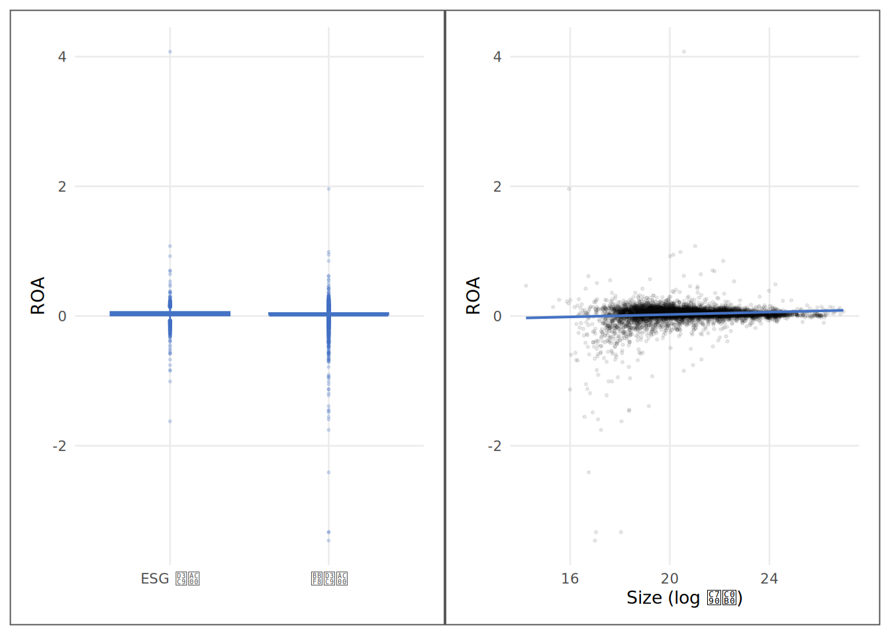
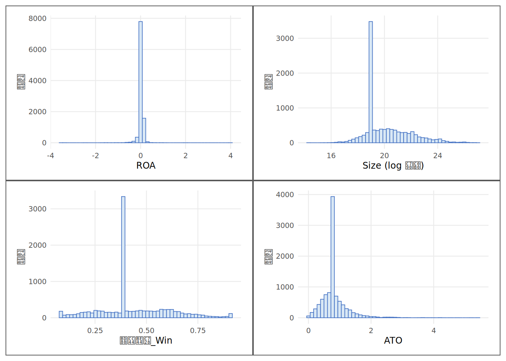
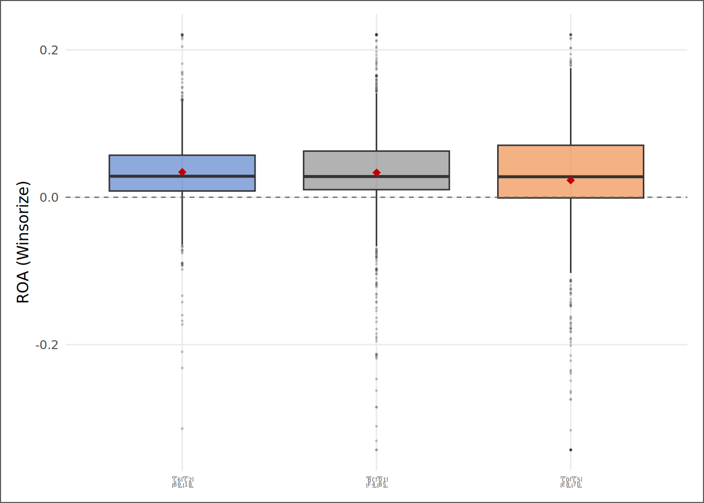

# | 키워드 | 한 줄 핵심 |
|---|---|---|
1 | 질문 유형 4분류 (기술·비교·관계·예측) | 같은 현상을 보는 네 가지 렌즈 — 질문의 구조가 방법을 결정한다 |
2 | 변수 척도 (연속·이진·명목) | 변수가 어떤 척도인가가 쓸 수 있는 방법의 범위를 결정한다 |
3 | 방법 선택 결정나무 | Y와 X의 유형을 조합하면 적합한 방법의 목록이 좁아진다 |
4 | 귀무가설과 대립가설 | 검정은 참으로 가정한 귀무를 데이터로 반증하려는 시도다 |
5 | 단측 검정과 양측 검정 | 차이의 방향을 모른다면 양측, 방향 가설이 있으면 단측을 선택한다 |
6 | 통계적 유의성 vs 경제적 중요성 | p<0.05가 '중요하다'를 의미하지 않는다 — 크기와 실무 의미를 함께 봐야 한다 |
7 | 예측과 설명의 구분 | 예측 모형은 왜인지 묻지 않는다 — 설명 모형은 크기와 방향을 묻는다 |
질문을 수술하라 — 가설과 방법의 선택
“올바른 질문을 찾는 것이 올바른 답을 찾는 것보다 훨씬 어렵다.” — 알베르트 아인슈타인
사례로 시작하기
팀장이 자리에서 일어나 화이트보드에 한 줄을 적었다. “ESG와 수익성의 관계를 보고하라.” 사안은 급했다. 운용위원회가 다음 주에 ESG 전략 방향을 재검토할 예정이었고, 팀장은 이 지시를 김자산에게 넘겼다.
자산은 자리로 돌아와 노트를 펼쳤다. 화이트보드의 열 자를 적어두고 그 아래 세 줄을 채웠다.
ESG가 수익성에 좋은가? → 관계를 추정해야 하나?
ESG 기업과 비ESG 기업의 수익성이 다른가? → 비교를 해야 하나?
수익성이 낮은 기업이 ESG 평가를 받지 못할 가능성이 높은가? → 예측을 해야 하나?
세 줄을 다시 읽고 나서야 자산은 팀장의 지시가 세 가지 다른 질문을 하나의 문장에 압축했음을 알아챘다. 조금 더 생각하니 네 번째도 있었다. “우선 ESG 평가 기업의 수익성 분포 자체를 보여줘.” — 이것은 비교도 관계도 예측도 아닌 기술(description)이었다.
팀장이 원하는 것은 무엇인가? 알 수 없었다. 자산은 다시 일어나 팀장 자리로 갔다. “어떤 질문에 답하고 싶으세요? 네 가지 분석이 각각 다른 대답을 줍니다.” 팀장이 잠시 멈추더니 말했다. “모두.”
이 장의 목적은 그 “모두”를 수행하는 기술을 가르치는 것이 아니다. 목적은 더 근본적이다. 분석을 시작하기 전에 질문의 유형을 구분하고 유형에 맞는 방법의 입구를 찾는 것. 잘못된 방법은 정확하게 수행되어도 엉뚱한 답을 준다. 병원으로 치면 — 복통 환자가 정형외과에서 완벽한 진찰을 받아도 배탈은 낫지 않는다. 올바른 진료과는 증상이 아니라 원인에 대한 가설로 결정된다. 이 장은 분석의 진료과 배정에 관한 이야기다.
5장에서 파생변수를 만들었다 — Size, 부채비율_Win, ROA, Loss_Dummy, ATO, Female_Ratio. 이것들은 도구 상자다. 이 장은 도구를 꺼내기 전에 어떤 공구를 꺼낼지 결정하는 절차를 배운다.
핵심 키워드
학습 목표
이 장을 마치면 다음 다섯 가지를 할 수 있다.
- 분석 지시를 받았을 때 질문을 기술·비교·관계·예측 중 하나로 분류하고 그 이유를 설명할 수 있다.
- Y와 X의 척도(연속·이진·명목)를 파악하고 방법 선택 결정나무로 후보 방법을 좁힐 수 있다.
- 귀무가설과 대립가설을 검정 가능한 명제로 진술하고, 단측·양측 검정 중 하나를 선택할 수 있다.
- SSOT 데이터셋의 주요 변수 8개를 결정나무에 통과시켜 분석 유형을 분류하는 표를 완성할 수 있다.
- “통계적으로 유의하다”와 “경제적으로 중요하다”의 차이를 구분하고, 예측과 설명의 목적 차이를 설명할 수 있다.
D→I→K→W 4단계 파이프라인
| 단계 | 이 장에서의 모습 |
|---|---|
| 데이터 (D) | SSOT 파생변수 — Size, ROA, Loss_Dummy, is_esg_rated, ATO, Female_Ratio, 상장상태 |
| 정보 (I) | 변수별 척도 분류, 4형 질문별 통계량 한 개씩 산출 |
| 지식 (K) | 질문 유형과 방법의 매핑 — “이 질문에는 이 도구가 필요하다” |
| 지혜 (W) | 분석 지시 → 질문 구조화 → 방법 선택 → 한계 명시의 절차 내면화 |
데이터 출처와 수집
데이터 | 출처 | 핵심 변수 | 이 장의 역할 |
|---|---|---|---|
재무제표 패널 | DataGuide 5.0 (KOSPI·KOSDAQ 상장기업) | 자산총계, 부채총계, 당기순이익 | 파생변수 산출의 원자료 |
ESG 등급 | KCGS 등급 (DataGuide 제공) | ESG등급, is_esg_rated(평가 여부 더미) | 방법 선택 실연의 핵심 이진 변수 |
파생 변수 | 3~5장에서 구축한 SSOT 파이프라인 | Size, ROA, 부채비율_Win, ATO, Female_Ratio, Loss_Dummy | 결정나무 분류 및 4형 실연의 입력 |
분석 표본은 5장까지 구축하고 정제한 SSOT 데이터셋이다. 이 장은 새로운 계산을 추가하지 않는다 — 이미 있는 변수들을 어떤 방법에 배정할 것인가를 결정하는 것이 이 장의 전부다.
질문의 해부 — 같은 증상, 다른 진료과
분석 요청을 받았을 때 가장 먼저 할 일은 메모장을 여는 것도, R 콘솔을 여는 것도 아니다. 첫 번째 할 일은 질문의 유형을 파악하는 것이다.
분석가들이 가장 자주 저지르는 실수 하나를 먼저 꺼내 두자. 방법을 먼저 정하고 질문을 끼워 맞추는 것이다. “우리 팀은 회귀분석을 주로 쓰니까 회귀로 풀어보자” — 이 사고의 방향이 잘못됐다. 공구를 먼저 들면 못만 보이게 되어 있다. 진료과를 먼저 결정하고 환자를 배정하는 병원은 오진을 낸다.
질문에는 네 가지 유형이 있다. 이 분류가 이 장의 중심축이다.
기술형(Descriptive): “어떤 모습인가?” ESG 평가 기업의 ROA 분포가 어떻게 생겼는가, 평균은 얼마이고 극단값은 어느 정도인가. 답은 분포 그림과 요약 통계량이다. 가설 검정이 필요 없다.
비교형(Comparative): “두 집단이 다른가?” ESG 평가 기업과 미평가 기업의 ROA 평균이 다른가. 답은 집단 간 차이와 그 차이가 우연이 아닐 가능성(p값)이다. 8장에서 공식 검정으로 발전한다.
관계형(Relational): “두 변수가 함께 움직이는가? 다른 조건을 고정하면 얼마나?” 기업 규모가 클수록 ROA가 높은가 — 상관·회귀가 여기 속한다. 9~10장의 본편이다.
예측형(Predictive): “이 변수들로 결과를 맞힐 수 있는가?” Size와 부채비율로 내년 적자 여부를 예측할 수 있는가. 답은 예측 정확도와 분류 성능이다. 11장의 본편이다.
네 유형의 핵심 차이는 한 곳에 있다 — “왜(why)”에 대한 관심의 깊이다. 기술형은 “왜”가 없다. 비교형은 “무엇이 다른가”까지 간다. 관계형은 “조건부로 얼마나 다른가”를 묻는다. 예측형은 “왜”를 묻지 않고 “맞히는가”만 묻는다. 그래서 관계형 방법으로 좋은 예측 성능을 기대하거나, 예측 모형의 계수로 인과를 주장하는 것은 처음부터 진료과를 잘못 배정한 것이다.
은유로 돌아가자. 네 가지 유형은 네 진료과에 대응한다. 기술형은 건강검진 — 상태를 재는 곳이다. 비교형은 두 집단의 처방을 비교하는 임상연구실이다. 관계형은 특정 요인의 조건부 관계를 측정하는 생리학 실험실이다. 예측형은 재발 위험을 예측하는 예방의학과다. 복통 환자가 어느 과에 가야 하는지는 복통의 증상이 아니라 의심되는 원인 가설로 정해진다. 분석도 마찬가지다 — 유형을 결정하는 것은 데이터가 아니라 질문 뒤에 숨은 목적 가설이다.
변수의 척도와 방법의 대응
같은 비교형 질문이라도 Y가 연속 변수냐 이진 변수냐에 따라 도구가 달라진다. ROA를 비교한다면 두 집단 평균 차이(t검정)가 자연스럽다. 그런데 ESG 평가 여부(is_esg_rated, 0/1)를 비교한다면? 두 집단의 평균은 여전히 계산되지만 그 평균은 “집단 내 비율”이다 — 이때는 카이제곱 검정이 더 적합한 도구다.
이진 변수에 연속형 검정을 무비판적으로 적용하는 것이 이 장에서 다룰 함정 중 하나다. 물론 t검정을 0/1 데이터에 쓰는 것이 수학적으로 금지된 것은 아니다. 그러나 “이진 변수인 것을 알면서도 평균 비교를 쓰는 것”과 “이진 변수인지 모르고 쓰는 것”은 분석가의 수준에서 다르다. 변수의 성격을 아는 것이 먼저다.
변수의 척도를 세 가지로 분류한다.
연속형(Continuous): ROA, Size, 부채비율_Win, ATO, Female_Ratio. 두 값 사이에 모든 실수 값이 있을 수 있다. 평균이 의미 있고 차이가 계산 가능하다.
이진형(Binary): is_esg_rated, Loss_Dummy. 0 또는 1만 취한다. 평균은 비율로 해석되고, 이것을 연속형처럼 다루려면 의식적인 선택이 필요하다.
명목형(Nominal): 상장상태(정상/상장폐지), ESG등급(S/A+/A/B+/B/C/D). 순서 없는 범주다. 크기 비교가 불가능하고 분석에 쓰려면 더미 변환이 필요하다.
수식으로 정리하면, Y와 X의 척도 조합이 방법의 범위를 좁힌다.
Y: 연속 × X: 이진 → 평균 차이 검정 (t검정, 8장) → 더미 회귀 (10장)
Y: 연속 × X: 연속 → 상관·산점도 (9장) → 다중회귀 (10장)
Y: 이진 × X: 연속 → 로지스틱 회귀 (11장)
Y: 이진 × X: 이진 → 교차표·카이제곱
Y: 이진 × X: 복합 → 로지스틱 회귀 (11장)
Y: 없음 (기술) → 기술통계 + 분포 그림 (7·8장)이것이 방법 선택 결정나무의 골격이다.
질문 유형 | Y 척도 | X(집단·설명변수) 척도 | 이 책의 방법 | 본편 장 |
|---|---|---|---|---|
기술 | 연속 또는 이진 | 없음 | 기술통계 + 분포 그림 | 7·8장 |
비교 | 연속 | 이진 집단 | t검정 → 더미 회귀 | 8장 |
비교 | 이진 | 이진 집단 | 교차표·카이제곱 | 8장 |
관계 | 연속 | 연속 | 상관·산점도 | 9장 |
관계 | 연속 | 연속+통제 | 다중회귀 (OVB 통제) | 10장 |
예측 | 이진 | 연속·이진 복합 | 로지스틱 회귀 | 11장 |
표 6.3은 이 책의 나머지 절반(7~11장)을 한 표로 요약한 지도다. 각 행이 한 진료과이고, 오른쪽 끝 열이 그 진료과의 담당 장이다. 지금 당장 모든 방법을 알 필요는 없다 — 어떤 질문이 어디로 연결되는지 이 지도에서 찾을 수 있으면 된다.
검정의 본질은 ’우연인가 구조인가’다. 귀무가설은 ’우연’의 세계를 가정하고, p값은 그 세계에서 지금 데이터가 얼마나 이례적인지를 잰다. 8장의 t검정이 이 직관을 처음 도구로 만든다.
가설의 언어 — 귀무·대립·단측·양측
비교형과 관계형 질문은 한 걸음 더 나아가야 한다 — 분석을 시작하기 전에 질문을 검정 가능한 명제로 번역해야 한다. 그것이 가설 진술이다.
통계 검정은 증명이 아니라 반증 시도다. 수학에서 증명은 명제가 참임을 직접 보이지만, 통계 검정은 “차이가 없다는 가정이 틀렸음을 보인다.” 이 구조가 귀무가설(H0)과 대립가설(H1)이다.
귀무가설 (H0): 반증 시도의 표적 — 기본적으로 "차이 없음·관계 없음"
대립가설 (H1): 분석가가 데이터로 지지하려는 방향 — "차이 있음·관계 있음"재판의 비유가 여기서도 유효하다 — 피의자는 무죄로 간주되고(귀무), 검사는 증거로 무죄 가설을 반증해야 한다(대립). 귀무가설을 기각하는 것은 유죄 판결이 아니다. “무죄 가설이 데이터와 극히 양립하기 어렵다”는 것이다.
이진 결정이 하나 더 있다 — 단측 검정이냐 양측 검정이냐.
양측(two-sided): H1: mu1 ≠ mu2 — 방향을 사전에 예측하지 않는다
단측(one-sided): H1: mu1 > mu2 — 사전 이론·선행연구로 방향을 안다“ESG 평가 기업의 ROA가 미평가 기업과 다른가”가 양측이고, “ESG 평가 기업의 ROA가 미평가 기업보다 높은가”가 단측(우측)이다. 단측은 같은 데이터에서 p값을 절반으로 줄여준다 — 그만큼 증거 기준이 낮아진다. 따라서 단측 검정은 방향 가설이 선행연구·경제 이론에 근거할 때만 정당하다. “p값을 작게 만들려고 단측을 선택했다”는 것은 분석의 신뢰를 스스로 무너뜨리는 행위다.
이 장의 마지막 개념 예고를 꺼낸다. “통계적으로 유의하다”는 것과 “경제적으로 중요하다”는 것은 다른 말이다. 표본이 10만 건이면 실제로는 미미한 차이(0.001%p)도 p<0.001로 유의하게 나올 수 있다. p값은 차이의 크기를 말하지 않는다 — 차이가 있는지에 대한 증거의 강도만 말한다. 8장에서 Cohen’s d로 효과 크기를 재는 이유, 10장에서 계수의 경제적 해석을 강조하는 이유가 여기 있다. 지금은 개념의 씨앗만 심어 두고 본편에서 데이터로 확인한다.
같은 질문의 네 얼굴 — SSOT 실연
개념이 충분히 쌓였다. 이제 데이터로 직접 보인다. “ESG 평가 여부와 수익성(ROA)의 관계” — 이 하나의 주제가 네 가지 분석 유형으로 어떻게 변신하는지, 각각 한 개의 통계량으로 실연한다.
# ① SSOT 데이터 적재 (경로는 setup에서 ssot_path로 확정)
ssot_raw <- read_book_csv(ssot_path)
# ② 분석 표본: 이 장에서 쓸 변수만 고르고, 핵심 변수 결측 제거
df06 <- ssot_raw |>
dplyr::transmute(
코드, 코드명, 회계연도,
ROA,
Size,
부채비율_Win,
ATO,
Female_Ratio,
is_esg_rated,
Loss_Dummy,
상장상태
) |>
tidyr::drop_na(ROA, is_esg_rated)코드 읽기. ①에서 read_book_csv()가 SSOT 파일을 데이터프레임으로 불러온다. ②의 파이프라인(|>)은 세 단계를 순서대로 읽으면 된다 — “ssot_raw를 받아서, 이 장의 분석에 필요한 열만 고르고(transmute), ROA와 is_esg_rated 중 하나라도 결측인 행을 버린다(drop_na).” transmute()는 select()처럼 열을 고르되 이름을 바꾸거나 계산식을 적용할 수 있다. 이 한 블록이 4형 분석 모두의 재료를 통일한다 — 분석 유형마다 표본이 달라지면, 결과의 차이가 방법의 차이인지 데이터의 차이인지 구분할 수 없게 된다.
분석 표본은 2010~2024년, 667개 기업의 기업-연도 관측치 10,000건이다. 이 가운데 ESG 평가 기업-연도는 4,047건(40.5%), 미평가는 5,953건이다.
# 【기술형】 ① 집단별 ROA 분포 요약
desc_roa <- df06 |>
dplyr::group_by(
ESG평가여부 = dplyr::if_else(is_esg_rated == 1, "평가", "미평가")
) |>
dplyr::summarise(
N = dplyr::n(),
평균 = mean(ROA, na.rm = TRUE),
중앙값 = median(ROA, na.rm = TRUE),
SD = sd(ROA, na.rm = TRUE),
.groups = "drop"
)
# 【비교형】 ② 두 집단 ROA 평균 차이 검정
t_result <- t.test(ROA ~ is_esg_rated, data = df06)
# 【관계형】 ③ Size–ROA 피어슨 상관
cor_size_roa <- cor(df06$Size, df06$ROA, use = "complete.obs")
# 【예측형】 ④ 집단별 Loss_Dummy 비율 — 예측 기초 비율 확인
loss_by_esg <- df06 |>
dplyr::group_by(is_esg_rated) |>
dplyr::summarise(
Loss비율 = mean(Loss_Dummy, na.rm = TRUE),
.groups = "drop"
)코드 읽기. 네 블록은 각각 한 가지 질문 유형에 대응한다. ①의 group_by() |> summarise()는 집단별 요약 통계량을 계산하는 가장 기본적인 패턴이다 — group_by()가 “어떤 집단으로 나눌지”를 정하고, summarise()가 “집단 안에서 무엇을 계산할지”를 지시한다. dplyr::if_else(is_esg_rated == 1, "평가", "미평가")는 0/1 숫자를 읽기 좋은 라벨로 바꾸는 한 줄 변환이다. ②의 t.test(ROA ~ is_esg_rated, data)는 ROA를 is_esg_rated의 두 값(0/1)으로 나눈 집단별 평균이 같다는 귀무가설을 검정한다 — 물결표 ~ 왼쪽이 측정값, 오른쪽이 집단 구분 변수다. ③의 cor(x, y, use="complete.obs")는 피어슨 상관계수를 계산하되 한쪽이라도 결측이면 그 쌍을 제외한다. ④는 ①의 패턴을 Loss_Dummy에 반복해 집단별 적자 발생 비율을 구한다. 같은 도구를 다른 Y에 재사용하는 것이 R 코드의 경제성이다.
분석 유형 | 질문 (ESG와 수익성 주제) | 핵심 통계량 | 본편 |
|---|---|---|---|
기술형 | ESG 평가 기업의 ROA는 어떤 분포인가? | 평가군 ROA 평균 0.033 | 미평가군 0.020 | 7·8장 |
비교형 | ESG 평가 기업과 미평가 기업의 ROA 평균은 다른가? | 평균 차이 0.013 | t검정 p값 0.0000 | 8장 |
관계형 | 기업 규모(Size)와 ROA는 함께 움직이는가? | 피어슨 상관 r = 0.119 | 9·10장 |
예측형 | ESG 평가 여부로 적자 발생 비율이 다른가? | 평가군 적자 비율 16.9% | 미평가군 13.0% | 11장 |
숫자 | 통계적 해석 | 실무 번역 |
|---|---|---|
평가군 ROA 평균 차이 0.013 | 평가군 ROA가 더 높다 — 통제 전 단순 차이 | 단독 인용 불가 — 8~10장 통제 후 재확인 필수 |
t검정 p값 0.0000 | 1% 수준에서 통계적으로 유의하다 | 통계적 신호는 있으나 비교 가능성(같은 체급) 미검증 |
Size–ROA 상관 r = 0.119 | 양(+) 방향의 상관 — 규모가 클수록 ROA 경향 있음 | 규모와 수익성의 선형 묶임은 약함 — 다중회귀에서 재확인 |
평가군 Loss 비율 차이 +3.9%p | 평가군 적자 비율이 더 높다 | 이진 비율 차이만으로 예측 모형 판단 불가 |
# ① 비교형 — 집단별 ROA 박스플롯
p1 <- ggplot2::ggplot(
df06 |> dplyr::mutate(
집단 = dplyr::if_else(is_esg_rated == 1, "ESG 평가", "미평가")
),
ggplot2::aes(x = 집단, y = ROA)
) +
ggplot2::geom_boxplot(
fill = "#D9E8F5", color = "#4472C4",
outlier.alpha = 0.2, outlier.size = 0.4
) +
ggplot2::labs(x = NULL, y = "ROA") +
theme_book(10)
# ② 관계형 — Size–ROA 산점도 + 회귀선
p2 <- ggplot2::ggplot(
df06 |> tidyr::drop_na(Size, ROA),
ggplot2::aes(x = Size, y = ROA)
) +
ggplot2::geom_point(alpha = 0.08, size = 0.5) +
ggplot2::geom_smooth(
formula = y ~ x, method = "lm", se = TRUE,
color = "#4472C4", linewidth = 0.7
) +
ggplot2::labs(x = "Size (log 자산)", y = "ROA") +
theme_book(10)
p1 + p2
코드 읽기. 왼쪽(p1)과 오른쪽(p2)은 데이터는 같지만 질문 유형이 다르다. p1의 geom_boxplot()은 두 집단의 ROA 분포를 사분위수 박스로 시각화한다 — 이것이 비교형의 그림이다. p2의 geom_smooth(method="lm")는 Size와 ROA 사이에 직선 추세를 그린다 — 이것이 관계형의 그림이다. 파란 띠는 95% 신뢰 구간이다. 마지막 p1 + p2는 patchwork 패키지의 문법으로 두 그림을 좌우로 이어 붙인다. 같은 데이터가 다른 질문에 얼마나 다른 모습으로 보이는지 나란히 체감하는 것이 이 그림의 목적이다.
ESG 평가 기업의 ROA 평균(0.033)은 미평가 기업(0.020)보다 0.013만큼 높다. 비교형 t검정 p값은 0.0000로 1% 수준에서 통계적으로 유의하다. Size와 ROA의 상관은 양(+) 방향으로 0.119다. ESG 평가 기업의 적자 비율(16.9%)은 미평가 기업(13.0%)보다 3.884%p 높다.
그런데 이 네 개의 수치를 보고 결론을 내리면 안 된다. 이것들은 출발점의 스케치일 뿐이다. 비교형의 t검정은 통제변수가 없고, 관계형의 상관은 제3의 변수를 무시하며, 예측형의 집단 비율은 예측 모형이 아니다. 본격적인 분석은 7장부터 시작된다. 이 장이 한 일은 질문을 올바른 진료과에 배정하는 것이다.
SSOT 변수 8개를 결정나무에 통과시키다
네 가지 분석 유형을 알았다면, 이제 실제 SSOT 변수들이 어느 분석에 어떤 역할로 들어가는지 구체화한다. 변수를 결정나무에 통과시키는 작업이다.
# ① 변수별 고유값 수 — 이진·명목·연속을 구분하는 첫 단서
n_uniq <- df06 |>
dplyr::summarise(
ROA = dplyr::n_distinct(ROA, na.rm = TRUE),
Size = dplyr::n_distinct(Size, na.rm = TRUE),
부채비율_Win = dplyr::n_distinct(부채비율_Win, na.rm = TRUE),
ATO = dplyr::n_distinct(ATO, na.rm = TRUE),
Female_Ratio = dplyr::n_distinct(Female_Ratio, na.rm = TRUE),
is_esg_rated = dplyr::n_distinct(is_esg_rated, na.rm = TRUE),
Loss_Dummy = dplyr::n_distinct(Loss_Dummy, na.rm = TRUE),
상장상태 = dplyr::n_distinct(상장상태, na.rm = TRUE)
)
# ② 변수별 결측 건수
n_miss <- df06 |>
dplyr::summarise(
dplyr::across(
c(ROA, Size, 부채비율_Win, ATO, Female_Ratio,
is_esg_rated, Loss_Dummy, 상장상태),
~sum(is.na(.x))
)
)코드 읽기. ①에서 n_distinct()는 각 변수의 고유값 수를 센다. 이진 변수는 2개, 명목 변수는 몇 개, 연속 변수는 매우 많은 고유값을 가진다 — 이 단순한 확인이 척도 분류의 첫 단계다. dplyr::summarise() 안에서 변수를 하나씩 명시적으로 나열한 이유는 across()로 모든 열에 같은 함수를 적용하는 것보다 각 변수의 의미를 의식적으로 확인하기 위해서다. ②의 across(c(...), ~sum(is.na(.x)))는 ~로 시작하는 익명 함수(lambda) 패턴이다 — ~sum(is.na(.x))는 “각 열(.x)에 대해 결측 개수를 세라”는 뜻이다. across()는 “같은 연산을 여러 열에 반복할 때 코드 중복을 없애는 도구”다.
변수명 | 척도 | 분석에서의 역할 | 적합 분석 유형 | 첫 등장 장 |
|---|---|---|---|---|
ROA | 연속 | Y: 수익성 지표 (주 관심) | 기술·비교·관계 | 7·8장 |
Size | 연속 | X: 규모 통제변수 | 관계·비교(통제) | 7장 |
부채비율_Win | 연속 | X: 레버리지 통제변수 | 관계·비교(통제) | 8장 |
ATO | 연속 | X: 자산 효율성 지표 | 관계·비교(X) | 9장 |
Female_Ratio | 연속 | X: 다양성 지표 | 관계·비교(X) | 9장 |
is_esg_rated | 이진(0/1) | X 또는 집단 구분 (Y로 쓰면 예측형) | 비교(집단) → 예측(이진 Y) | 8장 |
Loss_Dummy | 이진(0/1) | Y: 손실 여부 예측 대상 (X로 쓰면 집단 구분) | 예측(이진 Y) → 비교(집단 구분) | 8·11장 |
상장상태 | 명목(범주) | X: 상장 유지/폐지 집단변수 (더미 변환 필요) | 비교(집단) — 더미 변환 후 | 7장 |
표 6.6에서 8개 변수 중 연속형이 5개, 이진형이 2개, 명목형이 1개다. 두 가지 사실을 기억하라. 첫째, 이진 더미(is_esg_rated, Loss_Dummy)는 Y로 쓰면 예측 모형(11장)으로 가고, 집단 구분 변수로 쓰면 비교 검정(8장)으로 간다 — 같은 변수가 어느 위치에 놓이느냐에 따라 진료과가 달라진다. 둘째, 명목 변수인 상장상태(1개 범주)는 회귀에 넣으려면 반드시 더미로 변환해야 한다 — 그냥 숫자 코드로 넣으면 “코드 1이 코드 2보다 수학적으로 절반”이라는 잘못된 가정이 모형에 들어간다.
# ① 히스토그램 함수 — 같은 구조를 4번 반복하지 않기 위해
make_hist <- function(data, var, xlab) {
ggplot2::ggplot(data, ggplot2::aes(x = .data[[var]])) +
ggplot2::geom_histogram(
bins = 50,
fill = "#D9E8F5",
color = "#4472C4",
linewidth = 0.3
) +
ggplot2::labs(x = xlab, y = "빈도") +
theme_book(9)
}
# ② 변수별 결측 제거 후 히스토그램 생성
p_roa <- make_hist(df06 |> tidyr::drop_na(ROA), "ROA", "ROA")
p_size <- make_hist(df06 |> tidyr::drop_na(Size), "Size", "Size (log 자산)")
p_lev <- make_hist(df06 |> tidyr::drop_na(부채비율_Win), "부채비율_Win", "부채비율_Win")
p_ato <- make_hist(df06 |> tidyr::drop_na(ATO), "ATO", "ATO")
(p_roa + p_size) / (p_lev + p_ato)
코드 읽기. 이 코드에는 새로운 기법 두 가지가 들어 있다. 첫째, ①에서 make_hist()를 만들어 같은 히스토그램 코드를 네 번 반복하는 대신 한 번만 썼다 — “코드의 반복을 함수로 줄인다”는 R의 설계 원리다. 함수를 만들 때는 function(인자들) { 처리 내용 } 구조를 쓴다. 둘째, aes(x = .data[[var]])의 .data[[var]]는 변수명이 문자열로 저장되어 있을 때 tidyverse에서 그 열을 찾는 방법이다 — aes(x = ROA) 대신 aes(x = .data[["ROA"]])처럼 쓴다. 이것을 모르면 함수 안에서 tidyverse 문법이 작동하지 않아 막히는 경우가 생긴다. ②에서는 변수마다 drop_na()로 해당 변수의 결측만 제거한다 — 모든 변수의 결측을 한꺼번에 제거하면 표본이 필요 이상으로 줄어든다.
네 분포를 보면 ROA와 ATO에는 오른쪽 꼬리가 있고, Size는 상대적으로 대칭에 가깝다. 부채비율_Win은 Winsorize가 적용된 것이지만 여전히 오른쪽으로 치우쳐 있다. 이 분포 형태가 이후 비교·관계 분석에서 어떤 주의가 필요한지, 어떤 방법을 쓸지를 미리 알려준다.
차이를 검정한다 — t검정, ANOVA, 효과크기
방법을 골랐으면 실행한다. 이 절은 차이분석의 핵심 도구 네 가지를 실데이터로 돌린다 — Welch t검정(두 집단), Cohen’s d(2집단 효과크기), 일원배치 ANOVA(세 집단 이상), Tukey HSD 사후검정과 η²(ANOVA 효과크기).
Level 1 — 두 집단: ESG 평가 여부와 ROA (Welch t검정 + Cohen’s d)
# ① 등분산 가정 없이 두 집단 평균 비교(Welch 검정 = R 기본값)
t_esg <- t.test(ROA_Win ~ is_esg_rated, data = aov_df, var.equal = FALSE)
# ② Cohen's d — pooled SD로 표준화한 실질 효과크기
g1 <- aov_df$ROA_Win[aov_df$is_esg_rated == 1]
g0 <- aov_df$ROA_Win[aov_df$is_esg_rated == 0]
n1 <- length(g1); n0 <- length(g0)
pooled_sd <- sqrt(((n1 - 1) * var(g1) + (n0 - 1) * var(g0)) / (n1 + n0 - 2))
cohen_d <- (mean(g1) - mean(g0)) / pooled_sd코드 읽기. ①의 t.test(... var.equal = FALSE)는 두 집단의 분산이 같지 않아도 되는 Welch 검정이다 — ESG 평가 기업(대형사 위주)과 미평가 기업은 수익성 분산이 다를 수 있어 Welch 검정이 안전하다. ②의 Cohen’s d는 평균 차이를 공통 표준편차로 나눠 단위를 제거한 값으로, p값이 “차이가 우연인가”를 묻는다면 d는 “그 차이가 실무적으로 큰가”를 묻는다.
ESG 평가 기업과 미평가 기업의 Winsorize ROA 평균 차이는 Welch t검정에서 p값 0.001 미만, Cohen’s d = 0.10(무시할 수준)다. 수만 건 표본에서는 작은 차이도 유의해지므로, p값만으로 “큰 차이”라 단정하지 말고 d를 함께 읽어야 한다.
Level 2 — 세 집단 이상: ESG 등급군과 ROA (ANOVA + Tukey HSD + η²)
t검정을 등급 쌍마다 반복하면 1종 오류가 누적된다. 세 집단 이상은 ANOVA 한 번으로 “어딘가 차이가 있는가”를 묻고, Tukey HSD로 “어느 쌍이 다른가”를 가린다.
# ① ESG등급(S·A+·A·B+·B·C·D)을 3구간으로 묶는다 (S가 최상위 등급)
grade_df <- aov_df |>
tidyr::drop_na(ESG등급) |>
dplyr::mutate(
등급군 = dplyr::case_when(
ESG등급 %in% c("S", "A+", "A") ~ "우수",
ESG등급 %in% c("B+", "B") ~ "보통",
ESG등급 %in% c("C", "D") ~ "취약",
TRUE ~ NA_character_
)
) |>
tidyr::drop_na(등급군) |>
dplyr::mutate(등급군 = factor(등급군, levels = c("우수", "보통", "취약")))
# ② 일원배치 ANOVA: 세 등급군의 ROA 평균이 모두 같은가
fit <- aov(ROA_Win ~ 등급군, data = grade_df)
anova_tab <- summary(fit)[[1]]
# ③ η² = 집단 간 제곱합 / 전체 제곱합 (ANOVA 효과크기)
ss_between <- anova_tab[["Sum Sq"]][1]
ss_total <- sum(anova_tab[["Sum Sq"]])
eta_sq <- ss_between / ss_total
# ④ Tukey HSD 사후검정 — 가족별 오류율을 통제한 쌍별 비교
tuk <- TukeyHSD(fit)코드 읽기. ①의 case_when()은 7개 등급을 우수/보통/취약 3군으로 접는다 — S가 최상위 등급임에 주의한다. ②의 aov()는 F-검정으로 “세 군의 평균이 모두 같다”는 귀무가설을 검정한다. ③의 η²는 전체 분산 중 등급군이 설명하는 비율(0.01 소·0.06 중·0.14 대)로 ANOVA의 효과크기다. ④의 TukeyHSD()는 모든 등급군 쌍을 비교하되 가족별 오류율(FWER)을 통제해 1종 오류 팽창을 막는다.
등급군 | 기업-연도 수 | 평균 ROA(Win) |
|---|---|---|
우수 | 871 | 0.03 |
보통 | 1,392 | 0.03 |
취약 | 641 | 0.02 |
ANOVA의 F = 6.32, p값 0.00, η² = 0.00(소(small))다. η²가 작다면 등급군이 ROA 분산에서 차지하는 몫이 작다는 뜻으로, “유의하지만 작다”의 전형이다. 어느 쌍이 실제로 다른지는 Tukey HSD로 확인한다.

Tukey HSD에서 신뢰구간이 0을 포함하지 않는 등급군 쌍이 통계적으로 유의하게 다른 쌍이다. ANOVA가 “차이가 있다”고 해도, 실제로 갈라지는 것은 보통 양 극단(우수 vs 취약) 한두 쌍일 때가 많다 — 사후검정이 필요한 이유가 여기에 있다. 단, ESG 등급은 평가 기업에만 존재하므로 이 분석은 ESG 평가 표본에 한정된다는 점을 결론에 명시해야 한다.
R로 직접 해보기
| IPO | 내용 |
|---|---|
| Input | In_class_R/11주차/Derived_SSOT_Dataset.csv (3~5장 산출 SSOT) |
| Process | 데이터 적재 → 척도 분류(이진·연속·명목) → 4형 질문별 통계량 산출 → 변수 8개 결정나무 분류 → 분포 시각화 |
| Output | Output/ch06_var_classification.csv, Output/ch06_four_types.csv |
| Report | “이 데이터로 어떤 분석이 가능한가” 1쪽 분석 계획 메모 (표 6.6 완성 형식) |
난이도 | 분석 아이디어 | 확인 포인트 |
|---|---|---|
초심자 | Female_Ratio를 Y로 할 때와 X로 할 때 각각 어떤 질문이 가능한지 기술·비교·관계형으로 정리한다 | 같은 변수가 위치에 따라 다른 질문을 만들 수 있음을 확인 |
초심자 | 상장상태를 집단 구분 변수로 쓸 때 더미 변환이 필요한 경우와 그렇지 않은 경우를 구분한다 | factor()와 직접 더미 변환의 차이 — R이 자동으로 처리하는 경우와 직접 변환해야 하는 경우 |
초심자 | Loss_Dummy를 Y(예측형)로 쓸 때와 집단 구분(비교형)으로 쓸 때 연구 질문을 각각 한 문장으로 쓴다 | Y의 척도가 달라지면 같은 X도 다른 방법이 필요함을 확인 |
고급자 | 귀무·대립가설 쌍을 ESG-ROA, Size-ATO, Female_Ratio-ROA 세 가지 쌍에 대해 작성하고 단측·양측 여부를 결정한다 | 단측 선택의 이론적 근거를 한 문장으로 쓸 수 있어야 정당하다 |
고급자 | 같은 변수 쌍(is_esg_rated×ROA)에 대해 `t.test(..., alternative='two.sided')`와 `alternative='greater'`의 p값을 직접 비교한다 | p값의 반감 — 단측이 항상 유리해 보이지만 반대 방향이면 검정력을 잃는다 |
AI 협업 프로토콜 — 질문 구조화에 AI를 쓰는 법
이 장의 핵심 스킬은 코드가 아니라 질문의 분류다. AI는 여기서 유용한 보조 도구가 될 수 있다 — 단, 올바르게 쓸 때만.
수준 | 이 장의 행동 |
|---|---|
L1 (인식) | AI에게 '회귀분석을 해야 하나 t검정을 해야 하나'를 바로 묻는다 — 질문의 구조 없이 |
L2 (적용) | Y와 X의 변수명·척도·연구 목적을 알려주고 적합한 방법을 묻는다 |
L3 (분석) | AI가 제안한 방법에 대해 '이 방법의 한계 두 가지와 대안 방법을 제시하라'고 반박 쿼리를 던진다 |
L4 (창의) | AI와 함께 같은 질문을 네 가지 유형으로 재구성하고, 각 유형의 한계를 표로 정리해 분석 계획에 포함한다 |
이 장 전용 프롬프트 두 개를 제공한다. 그대로 복사해 쓰되, 괄호 안을 자신의 데이터로 교체하라.
[프롬프트 1 — 방법 선택 전: 질문 구조화] “나는 다음 데이터를 가지고 있다: [변수 목록과 척도]. 연구 목적은 [한 문장]. 이 목적을 기술·비교·관계·예측 중 어느 유형으로 분류해야 하는지, 그 이유와 함께 설명해줘. 그리고 각 유형별로 대응하는 방법 하나씩을 추천해줘.”
[프롬프트 2 — 방법 선택 후: 반박 테스트] “나는 [방법명]을 쓰려 한다. Y는 [척도], X는 [척도]다. 이 선택이 잘못될 수 있는 경우를 두 가지 제시하고, 각각의 대안 방법을 알려줘.” AI의 답은 그대로 받아쓰지 않는다 — 대안 방법이 이 책의 어느 장에서 다루는지 확인하고, 데이터 조건이 충족되는지 직접 점검하라. 그것이 L2와 L3의 차이다.
| AI에게 맡겨도 되는 일 | 사람이 반드시 판단해야 하는 일 |
|---|---|
| 변수 척도 초안 분류 | 이진 Y를 예측으로 쓸지 비교로 쓸지 목적 판단 |
| 방법 목록 브레인스토밍 | 귀무가설 진술과 단측·양측 선택 |
| 코드 문법 오류 진단 | 통계적 유의성과 경제적 의미의 구분 |
| 동일 분석의 다른 표현 예시 | 한계와 대안 방법의 보고 책임 |
정리, 함정, 다음 장
이 장의 핵심을 한 문장으로 줄이면 이렇다. 질문의 유형이 방법을 결정한다 — 방법이 질문을 결정하면 안 된다. 분석을 시작하기 전에 “이것은 기술인가, 비교인가, 관계인가, 예측인가”를 묻고, Y와 X의 척도를 확인하고, 귀무가설을 진술하라. 이 세 단계가 올바로 서면 나머지 절차는 기술적 문제다.
많은 분석가들이 빠지는 함정 세 가지를 기억하라.
방법을 먼저 정하고 질문을 끼워 맞춘다. “우리 팀은 회귀를 주로 쓰니까”가 방법 선택의 이유가 되면, 예측이 필요한 질문에 설명 모형을 들이대거나 이진 Y에 선형회귀를 무심코 적용하게 된다. 공구함을 먼저 열지 마라 — 질문을 먼저 수술하라. 진료과를 먼저 결정하고 환자를 배정하는 병원은 오진을 낸다.
이진 변수에 평균 비교를 무비판적으로 적용한다. Loss_Dummy나 is_esg_rated를 Y로 놓고 집단별 평균을 비교하는 것은 수학적으로 불가능하지 않지만, 이진 변수의 평균이 “비율”임을 의식하지 않고 “연속형 차이”처럼 해석하면 오독이 생긴다. 변수의 척도를 아는 것은 방법 선택 전에 온다.
예측과 설명을 혼동한다. 예측 모형이 좋은 성능을 냈다고 계수의 방향이 인과적 기여를 나타낸다고 해석하거나, 설명 모형(회귀)을 만들었다고 “예측력이 높다”고 말하는 것 — 두 방향 모두 틀렸다. 11장에서 예측 모형을 직접 다루면서 이 경계를 다시 확인한다.
점검 항목 | 통과 기준 |
|---|---|
분석 지시를 기술·비교·관계·예측 중 하나로 분류했는가 | 4분류 중 하나 명시 — 복합(비교형+관계형) 표기도 허용 |
Y와 X(집단변수)의 척도(연속·이진·명목)를 확인했는가 | 변수별 척도 목록 작성 (표 6.6 형식) |
귀무가설과 대립가설을 한 문장씩 진술했는가 | H0: [차이 없음·관계 없음] + H1: [방향 포함] 형식 |
단측·양측 선택의 이론적 근거를 한 문장으로 썼는가 | 단측: 선행 이론 근거 1개 이상 / 양측: '방향 모름' 명시 |
통계적 유의성과 경제적 크기를 분리해서 보고할 계획인가 | 효과 크기(Cohen's d 또는 계수 크기) 병기 계획 기술 |
예측과 설명 중 어느 목적인지 미리 선언했는가 | '설명 목적이면 계수·방향' / '예측 목적이면 성능 지표' 구분 |
분야 | 기술형 | 비교형 | 관계형 | 예측형 |
|---|---|---|---|---|
마케팅 분석 | 캠페인 노출군 구매율 분포 | 노출·미노출 구매율 차이 | 광고비–매출 회귀 | 내달 구매 여부 예측 |
인사 분석 | 교육 이수자 직무 만족도 분포 | 교육 이수·미이수 성과 차이 | 업력–이직률 상관 | 이직 가능성 분류 |
공공 정책 | 지원금 수혜 기업 규모 분포 | 수혜·비수혜 기업 생존율 차이 | 지원금 규모–매출 성장 회귀 | 기업 파산 여부 예측 |
의료 통계 | 임상 대상자 기저 특성 기술 | 처치군·대조군 회복 속도 차이 | 투약량–부작용 빈도 상관 | 질환 재발 가능성 분류 |
신용 리스크 | 차주 신용점수 분포 | 담보·무담보 부실율 차이 | LTV–부도율 회귀 | 1년 내 연체 여부 예측 |
이 장의 산출물(ch06_var_classification.csv, ch06_four_types.csv)은 13장 최종 보고서의 “데이터와 방법” 절에서 분석 계획의 근거로 인용된다. 이 장에서 진술한 가설들 — “ESG 평가 기업의 ROA는 미평가 기업과 다른가(비교형)”, “Size와 ROA는 양의 조건부 관계인가(관계형)” — 은 7~10장에서 차례로 검증된다. 그 미해결 부분들은 12장에서 연구주제 발굴의 씨앗이 된다. 질문의 수술이 연구주제 발굴의 절반인 이유를 12장에서 다시 확인하게 될 것이다. 다음 장(7장)에서는 먼저 한 발 물러서서 연도별·시장별 큰 그림을 조망한다 — 기업 단위의 분석이 어떤 거시 배경 위에 놓여 있는지를 먼저 확인하는 것이 6장에서 배운 기술형 질문의 첫 번째 본편 적용이다.
주차 PBL — 자기 질문을 수술하라
이 장의 기술을 자신의 질문에 적용하는 것이 이번 주의 PBL이다. 본문에서 팀장의 질문(“ESG와 수익성의 관계”)을 4형으로 분해했다면, PBL에서는 자신이 분석하고 싶은 질문 하나를 가져와 같은 수술을 수행한다.
Context. 팀 내 다른 분석가가 보고서 초안을 가져왔다. 제목은 “여성 고용 비율이 높은 기업이 더 안전한 투자처다 — Female_Ratio와 Loss_Dummy의 분석.” 그런데 보고서에는 기술통계 하나와 상관계수 하나뿐이다. 임무는 두 가지다. 첫째, 이 보고서가 어떤 질문에 어떤 방법을 쓰고 있는지 4형으로 분류하고 빠진 분석 유형을 지적하라. 둘째, 자신만의 분석 계획을 이 장에서 배운 절차로 한 쪽에 정리하라.
| 단계 | 미션 | 핵심 |
|---|---|---|
| Level 1 (필수) | 질문 4형 변환 | “Female_Ratio와 Loss_Dummy” 주제를 기술·비교·관계·예측으로 각각 한 줄 질문으로 재구성 |
| Level 2 (심화) | 가설 진술 | Level 1의 비교형과 관계형 각각에 대해 H0와 H1을 진술하고 단측·양측 여부와 근거 한 문장 작성 |
| Level 3 (확장) | 방법 선택 계획서 | Level 1~2의 4개 질문을 표 6.3(결정나무)에 배정하고 각각의 첫 번째 통계량을 SSOT 데이터로 직접 계산 |
제출물은 과목 표준 4종 — Input(데이터), Script(프롬프트 로그 포함 코드), Output(결과 로그), Report(분석 계획 메모 1쪽). 본문의 Script/ch06_method_choice.R이 출발 코드다.
수행 가이드라인 (모범답안이 아니라 사고의 이정표다).
질문을 4형으로 나누는 것 자체가 이미 분석이다. “Female_Ratio와 Loss_Dummy의 관계를 본다”는 한 문장이 관계형인지 예측형인지는 목적에 달려 있다 — 투자 스크리닝이 목적이면 예측형, 경영 요인 이해가 목적이면 관계형. 목적을 먼저 쓰고 유형을 고르라.
가설 진술에서 “유의미한 차이가 있을 것이다”는 가설이 아니다. “여성 고용 비율이 높은 기업의 손실 발생 비율이 낮을 것이다(단측 대립가설)”처럼 방향·척도·집단이 명시되어야 검정 가능한 명제가 된다.
Level 3에서 SSOT로 직접 계산한 통계량을 “이 숫자가 무엇을 의미하는가”로 번역하라. 상관계수가 나왔다면 “약한 음의 조건부 관계이며, 인과를 말하지는 않는다”로 시작하는 한 문장이 숫자 낭독보다 강하다.
방법 선택 후 자기 점검 질문: “이 방법으로 얻은 답이 내 원래 질문에 답하는가?” 예측형 질문에 상관계수를 썼다면, 그 상관이 “내년 적자가 날 기업을 식별할 수 있는가”에 실제로 답하는지 돌아보라.
분석 계획서에는 반드시 “이 분석의 한계 한 가지와, 보완하려면 어떤 추가 분석이 필요한가”를 포함하라. 한계를 정직하게 쓰는 것이 분석 계획의 완결이다.
Level 3의 통계량을 계산할 때, Female_Ratio의 결측이 많다면 결측 패턴 자체를 기술형으로 먼저 보고하라 — 결측이 무작위인지 아닌지가 이후 분석의 해석 가능성을 결정한다.
채점 루브릭 (100점). 보고서는 다음 네 기준으로 평가된다.
| 평가 항목 | 배점 | 통과 기준 |
|---|---|---|
| 재현성 | 20 | 데이터 경로·스크립트·패키지·표본 수가 명시되어 그대로 재실행 가능 |
| 질문 구조화 | 30 | 4형 분류 정확성 + 귀무·대립가설 진술 완결성 + 단측·양측 선택 근거 |
| 방법 배정 | 25 | 표 6.3 형식으로 Y·X 척도 명시 + 방법 선택 + 본편 장 연결 |
| 한계 번역 | 25 | 빠진 분석 유형 지적 + 통계 결과의 의사결정 번역 + 한계 1개 이상 명시 |
이 장의 자료
- 데이터:
In_class_R/11주차/Derived_SSOT_Dataset.csv(3~5장 SSOT 파이프라인 산출) - 전체 스크립트:
Script/ch06_method_choice.R(본문 코드 전체) - 산출물:
Output/ch06_var_classification.csv,Output/ch06_four_types.csv
AI 협업 권장. 자신의 질문을 4형으로 분류하다 막히면, 질문 문장과 “Y는 무엇이고 X는 무엇인지”를 AI에게 설명하고 분류를 도와달라고 요청하라. AI가 “관계형입니다”라고 분류해 주더라도 그 분류가 맞는지 직접 판단하라 — 투자 목적인지 학술 연구 목적인지는 오직 요청자가 안다.
AI 사용 시 주의 3가지. (1) AI는 질문을 구체적으로 줘야 구체적으로 답한다 — “ESG와 ROA를 분석해줘”는 너무 넓다. (2) AI가 제안한 방법을 쓰더라도 변수 척도와 한계는 직접 명시하라. (3) 예측형으로 갈 때 AI가 계수의 인과성을 암시하면 정정하라 — 예측 모형의 계수는 설명이 아니다.
연습문제
문제 1. 어떤 분석가가 “기업 규모(Size)가 클수록 부채비율이 높다”는 가설을 검증하려 한다. (a) 이 가설의 질문 유형은 무엇인가? (b) Y와 X의 척도는 무엇인가? (c) 귀무가설과 대립가설을 진술하라. (d) 단측 검정이 정당한가, 이유는?
모범답안. (a) 관계형 — 두 연속변수 사이의 조건부 관계를 묻는다. (b) Y: 부채비율(연속), X: Size(연속). 집단 구분 변수가 없으므로 비교형이 아니다. (c) H0: Size와 부채비율의 모집단 회귀계수 = 0(또는 상관 = 0), H1: 양(+)의 관계(β > 0). (d) 대기업이 자본시장 접근성이 높아 부채 조달이 용이하다는 사전 이론이 있다면 단측 정당화 가능. “p값을 작게 하려고” 단측을 택하는 것은 정당하지 않다.
문제 2. Loss_Dummy를 Y로 쓰는 분석과 집단 구분 변수(X)로 쓰는 분석은 어떻게 다른가? 각각 해당하는 질문 유형과 적합 방법을 설명하라.
모범답안. Loss_Dummy를 Y로 쓰면 “이 변수들로 적자 발생 여부를 예측·설명할 수 있는가”(예측형 또는 관계형)가 되고, 이진 Y이므로 로지스틱 회귀가 적합하다(11장). 집단 구분 변수로 쓰면 “적자 기업과 흑자 기업의 다른 변수(예: Size)가 다른가”(비교형)가 되고, 집단별 평균 비교 또는 t검정이 적합하다(8장). 같은 변수가 Y 위치에 놓이느냐 X(집단) 위치에 놓이느냐에 따라 질문 유형·방법·해석이 모두 달라진다.
문제 3. 분석가가 SSOT 데이터에서 is_esg_rated와 Female_Ratio의 피어슨 상관계수를 계산해 “ESG 평가 기업일수록 여성 고용 비율이 높다”고 주장했다. 이 분석의 한계를 질문 유형과 척도 관점에서 두 가지 지적하라.
모범답안. 첫째, is_esg_rated는 이진(0/1) 변수인데 피어슨 상관은 두 연속변수 사이의 선형 관계를 가정한다. 이진 변수와 연속 변수 사이에 피어슨 상관을 쓰면 포인트-바이시리얼 상관에 해당하며, 이론적 최댓값이 낮아진다는 점을 의식해야 한다. 둘째, 이 분석은 관계형 질문에 해당하나 제3의 변수(기업 규모 등)를 전혀 통제하지 않았다. Size가 is_esg_rated와 Female_Ratio 모두에 조건부 관계가 있는 구조라면, 이 상관은 Size의 그림자일 수 있다. 주장을 강화하려면 Size 통제 후의 조건부 관계(10장 방법)가 필요하다.
문제 4. 예측과 설명의 혼동이 실무에서 어떤 문제를 일으키는지, 구체적인 예를 들어 설명하라.
모범답안. 예측 모형은 “어떤 입력으로 결과를 맞히는가”를 최적화한다 — 계수의 방향이나 크기는 인과적 의미가 없어도 예측 성능은 높을 수 있다. 예를 들어, ROA를 예측하는 모형에 전기 부채비율과 ATO를 함께 넣으면 예측력(R²)이 오를 수 있지만, 그 계수가 “부채비율을 1단위 높이면 ROA가 β만큼 달라진다”는 조건부 관계를 허용하지 않는다 — 두 변수 사이에 관측하지 못한 변수가 있을 수 있기 때문이다. 혼동이 생기는 전형적인 상황은 “모형이 높은 R²를 냈으니 이 변수들이 ROA에 기여한다”는 보고서다. 예측 목적이라면 “R² 0.35로 설명 가능하다”가 결론이고, 설명 목적이라면 “계수 +0.03, 규모 통제 후도 유의”가 결론이다. 두 결론을 섞으면 어느 쪽도 정확하지 않다.